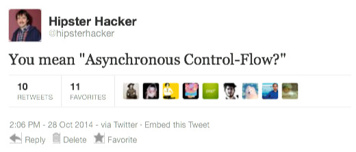

Created by Nathan Witt / @wittnl
var myNumber = 0;
myNumber = addFiveTo(myNumber);
myNumber = multiplyByTen(myNumber);
myNumber = divideByTwo(myNumber);
console.log(myNumber); // logs 25
var xhr = new XMLHttpRequest();
xhr.onload = function( data ) {
// handle response
};
xhr.onerror = function( error ) {
// handle error
};
xhr.open("GET", "http://example.com", true);
xhr.send();
$.ajax({
url: "http://example.com",
type: "GET",
success: function( data ) {
// handle response
},
error: function( error ) {
// handle error
}
});
var doIUnderstandAsync = false;
$.ajax({
url: "http://example.com",
complete: function( data ) {
doIUnderstandAsync = true;
}
});
alert("I understand async: " + doIUnderstandAsync);
Foolish mortal, AJAX doesn't block execution
var doIUnderstandAsync = false;
$.ajax( /* Didn't read, LOL */ );
alert("I understand async: " + false);
// LATER...
{
url: "http://example.com",
complete: function( data ) {
/* Hey dude, got your answer right here! */
doIUnderstandAsync = true;
}
}
$.ajax({
url: "http://example.com",
complete: function() {
console.log("STOP");
$.ajax({
url: "http://example.com",
complete: function() {
console.log("THIS");
$.ajax({
url: "http://example.com",
complete: function() {
console.log("MAD");
$.ajax({
url: "http://example.com",
complete: function() {
console.log("MAN!");
}
})
}
})
}
})
}
})
“A promise represents the eventual result of an asynchronous operation. The primary way of interacting with a promise is through its then method, which registers callbacks to receive either a promise’s eventual value or the reason why the promise cannot be fulfilled.” — Promises/A+
“I don't have your answer yet, but I promise to let you know when I do.”
.then() <-- Next...
.done() <-- Successful request.fail() <-- Failed request.always() <-- Run no matter the result.try() <-- Successful request.catch() <-- Failed request.finally() <-- Run no matter the resultSync |
Async |
|---|---|
|
|
successFn [, errorFn [, statusFn ]]Chainable
myPromise.then(successFn, errorFn)
.then(successFn, errorFn)
.then(successFn, errorFn)
.then(function( data ) {
// We made it!
});
Mutate data within the pipeline
myPromise.then(function( data ) {
var objectified = {
value: data
}
return objectified;
});
$.ajax()$.animate()Q.delay()Q.nfcall()Q.all()
/* Get it together, node */
Promise.denodeify(require('fs').readFile)